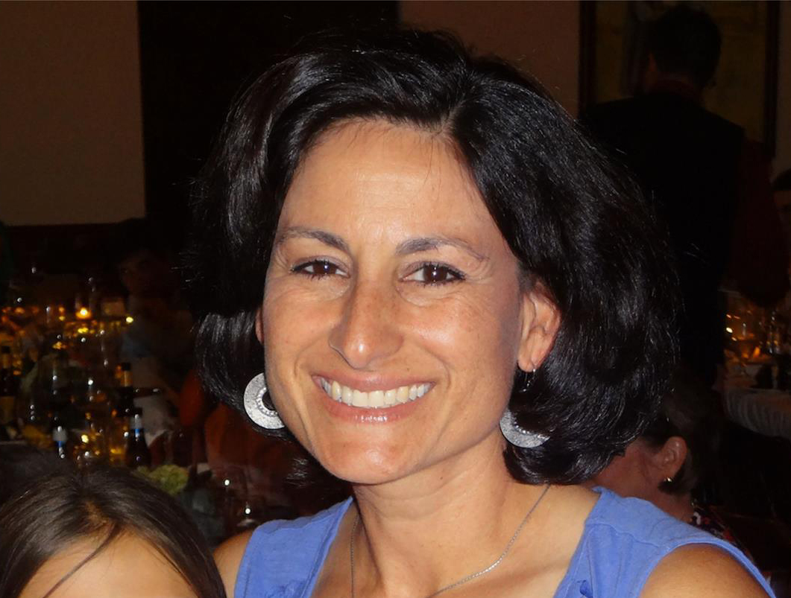

Diane Vartuli
Diane Vartuli

Information
Gender
Female
Other names
None
Date of birth
May 30, 1966
Occupation
Tennis Coach
Pets
Toby
Likes
Good food
Dislikes
Vague Questions
Overview of Life
Diane Vartuli grew up in Arlington, Texas with her parents and her five older siblings. She went to Bailey Junior High, then Arlington High School, then she graduated from Stephen F. Austin State University after majoring in marketing. She met Anthony in Texas and, after going on a mission trip to Russia for months, got engaged to him (in Italy), and then got married.
Anthony and Diane settled down in Centennial, Colorado and had Michael, Giovanna, and Julia. Diane started selling her pasta sauce to the neighbors nearby and started selling online books, while also teaching a lot of tennis. She now works as a tennis coach for some of the teams at Arapahoe high school, where Michael, Giovanna, and Julia all went.
Diane and Giovanna very much enjoy spending time together. They often times will have tea together or will take the dog, Toby, on long walks. They also love watching period dramas together and have a lot of fun conversations between the two of them.
Anthony and Diane settled down in Centennial, Colorado and had Michael, Giovanna, and Julia. Diane started selling her pasta sauce to the neighbors nearby and started selling online books, while also teaching a lot of tennis. She now works as a tennis coach for some of the teams at Arapahoe high school, where Michael, Giovanna, and Julia all went.
Diane and Giovanna very much enjoy spending time together. They often times will have tea together or will take the dog, Toby, on long walks. They also love watching period dramas together and have a lot of fun conversations between the two of them.
◦ Diane is an incredible cook and makes wonderful Italian meals.
◦ Giovanna and Diane once stayed up until two in the morning to finish Downton Abbey season two.
◦ Diane was Giovanna’s soccer coach (their team name was the Killer Bees).
◦ Diane is Toby’s favorite, probably because she always walks him.
◦ Diane and Giovanna both own tea sets.
◦ Diane's middle names are Teresa and Litrio (her maiden name).
◦ Giovanna and Diane once stayed up until two in the morning to finish Downton Abbey season two.
◦ Diane was Giovanna’s soccer coach (their team name was the Killer Bees).
◦ Diane is Toby’s favorite, probably because she always walks him.
◦ Diane and Giovanna both own tea sets.
◦ Diane's middle names are Teresa and Litrio (her maiden name).